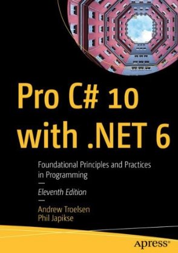

Слайди
Це коротка лекція. Відкрийте HTML у браузері: стрілки, пробіл, O — огляд, F — повний екран.
Лекція 00
Курс об’єктноорієнтованого програмування поверх C# / .NET. Матеріали зібрані так, щоб ви вчилися самостійно: до кожної теми є слайди, конспект і код.
Ми не будемо вчити синтаксис із нуля. Консоль, типи, методи й масиви вже мають бути вам знайомі.
.NET / C# ви вже писали.Класичне ООП — це стара й популярна парадигма. Її основи були закладені ще на початку 1960-х років (об’єкти в LISP).
Це коротка лекція. Відкрийте HTML у браузері: стрілки, пробіл, O — огляд, F — повний екран.
Тут ви знайдете той самий матеріал розгорнуто, з кодом і посиланнями на лабораторні роботи.
Це консольний проєкт у code/lecture-NN-.... Запускайте його й дивіться вивід разом зі слайдами.

Ваша робота на курсі оцінюється за 100-бальною шкалою.
Ви отримаєте за всі роботи з вашого плану. Це основна частина оцінки протягом семестру.
Він складається із запитань з тем курсу та невеликого практичного завдання, яке ви покажете наживо.
Після лекції
Наступна тема — чотири стовпи ООП. Відкрийте слайди лекції 01 і проєкт code/lecture-01-oop-theory.